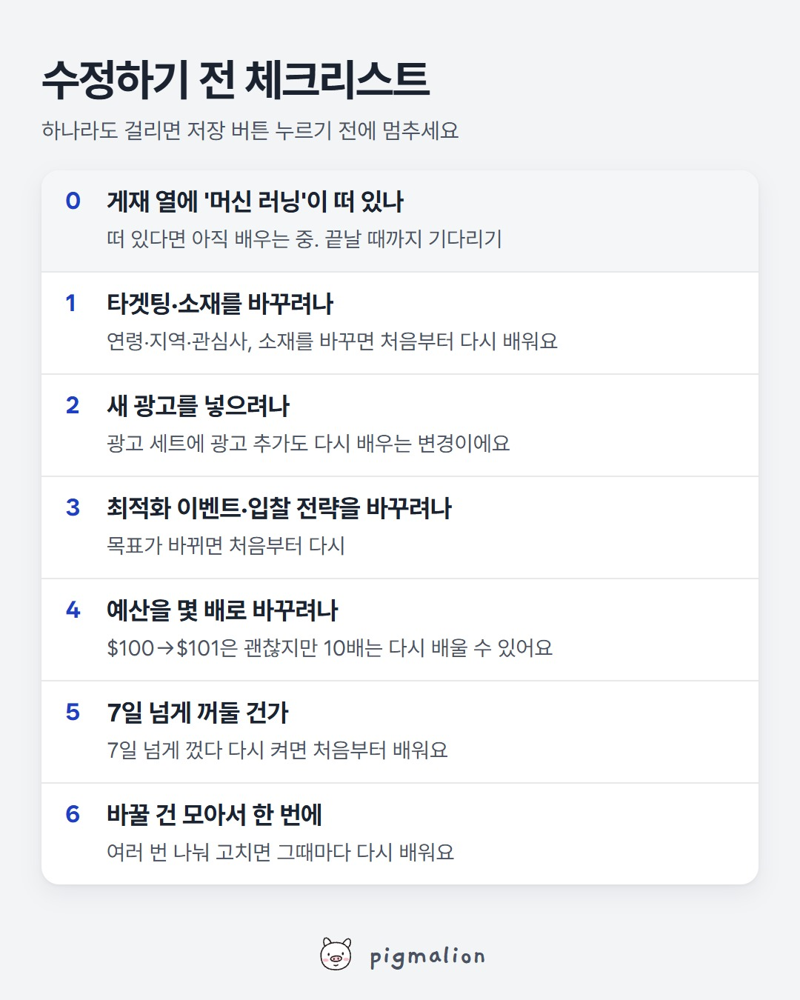

수정하기 전 체크리스트
저장해두고 성과가 떨어질 때 위에서부터 확인하세요

이미지를 길게 누르면 저장돼요
메타 공식 도움말로 보는 자세한 내용
머신 러닝 단계란
새 광고나 광고 세트를 만들거나 기존 광고 세트에 '영향이 큰 변경'(아래 목록)을 하면, 게재 시스템이 그 광고 세트를 가장 잘 게재하는 방법을 찾는 기간이에요. 이 기간엔 게재 열에 '머신 러닝'이라고 표시돼요.
언제 끝나나요
안정적으로 게재할 수 있게 되면 바로 끝나요. 보통 마지막 '영향이 큰 변경' 후 일주일 동안 결과가 약 50건 쌓이면 끝나요. (Shops 광고는 웹사이트 구매 17건 + Meta 내 구매 5건)
결과가 부족해 못 끝나면 '제한된 머신 러닝'으로 표시돼요.
다시 처음부터 배우는 변경
- 타겟팅을 바꿀 때
- 광고 크리에이티브를 바꿀 때
- 최적화 이벤트를 바꿀 때
- 광고 세트에 새 광고를 넣을 때
- 7일 넘게 껐다가 다시 켤 때
- 입찰 전략을 바꿀 때
크기에 따라 다른 변경
예산, 광고 세트 지출 한도, 입찰가·결과당 비용 목표·ROAS 목표 금액. 예산을 $100에서 $101로 올리면 거의 영향이 없지만, $1,000으로 올리면 다시 배울 수 있어요.
어드밴티지+ 캠페인 예산을 쓰면 캠페인 예산이나 입찰 전략을 바꿀 때 여러 광고 세트가 함께 다시 배울 수 있어요.
메타가 권하는 것
- 머신 러닝이 끝날 때까지 기다렸다가 수정하기
- 성과가 좋아질 근거가 있을 때만 수정하기
- 광고·광고 세트 수 늘리지 않기 (비슷한 광고 세트는 합치기)
- 너무 적지도 부풀리지도 않은 현실적인 예산, 잦은 예산 변경 피하기
확인하는 곳
광고 관리자 → 열에 "최근 영향이 큰 변경"을 추가하면 마지막으로 다시 배우게 만든 수정 시점이 보이고, "결과" 열과 함께 보면 그 뒤로 몇 건 쌓였는지 알 수 있어요.
출처: Meta 비즈니스 지원 센터 「머신 러닝 단계 정보」, 「영향이 큰 변경 및 머신 러닝 단계」
AI 프롬프트
■ 어디에: 챗GPT, 클로드, 제미나이 중 아무거나 (무료 버전도 돼요)
■ 무엇을: 메타 광고 관리자의 광고 세트 표 + 바꾸려는 내용 한 줄
■ 어떻게:
- 광고 관리자 → "광고 세트" 탭으로 이동
- "열" → "열 맞춤 설정"에서 게재, 결과, 결과당 비용, 예산, "최근 영향이 큰 변경"을 켜기
- 기간은 최근 7일
- 표를 드래그해서 복사(Ctrl+C)하거나 "내보내기"로 CSV 받기
- AI 새 대화에 아래 프롬프트를 "복사" 버튼으로 복사해 붙여넣고, 맨 끝 자리에 표와 바꾸려는 내용을 붙여넣기
- 엔터. 광고 세트마다 지금 고쳐도 되는지, 기다려야 하는지 나와요
너는 메타 광고를 운영하는 퍼포먼스 마케터야. 아래에 광고 세트 표(게재 상태, 결과, 결과당 비용, 예산, 최근 영향이 큰 변경 날짜)와 내가 바꾸려는 내용을 붙여넣을게. 참고할 사실 (메타 공식 도움말 기준): - 머신 러닝 단계는 보통 마지막 '영향이 큰 변경' 후 일주일 동안 결과가 약 50건 쌓이면 끝나. 그동안은 성과가 불안정하고 결과당 비용이 높아. - 다시 처음부터 배우게 되는 변경: 타겟팅, 광고 크리에이티브, 최적화 이벤트, 입찰 전략 변경, 광고 세트에 새 광고 추가, 7일 넘게 일시 중지 후 재개 - 크기에 따라 달라지는 변경: 예산, 지출 한도, 입찰가·결과당 비용 목표·ROAS 목표 금액 (예: $100→$101은 거의 영향 없음, $100→$1,000은 다시 배울 수 있음) 이 순서로만 봐줘. 1) 지금 상태: 광고 세트마다 머신 러닝 중 / 끝남 / 제한된 머신 러닝 중 무엇인지, 마지막 '영향이 큰 변경' 후 며칠·몇 건인지 표로 정리해줘. 2) 이번 수정의 영향: 내가 바꾸려는 내용이 "다시 배우는 변경"인지, "크기에 따라 다른 변경"인지, "괜찮은 변경"인지 판정해줘. 3) 판단: 광고 세트마다 "지금 고쳐도 됨 / 며칠 더 기다리기 / 나눠서 조금씩" 중 하나로 답하고, 이유를 한 줄로. 4) 대안: 기다리기 어렵다면 다시 배우는 걸 최소화하는 방법(바꿀 것 모아서 한 번에, 새 광고 세트로 따로 테스트, 예산은 조금씩 등)을 많아야 3개. 숫자가 부족해서 판단 못 하는 부분은 "판단 보류"라고 따로 적고, 추측은 추측이라고 써줘. [여기에 광고 세트 표 붙여넣기] [여기에 바꾸려는 내용 한 줄 — 예: 광고 세트 A 예산을 하루 10만 원에서 30만 원으로 올리고 싶어요]